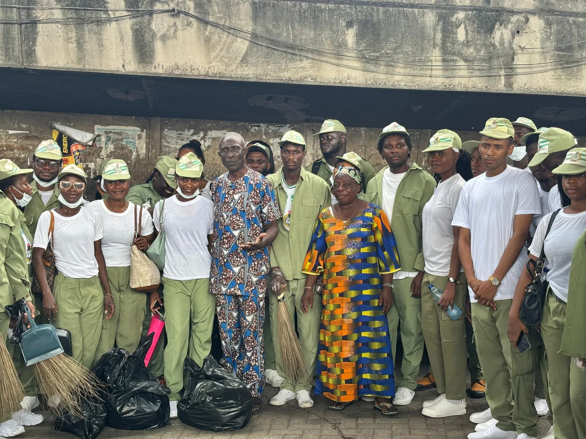
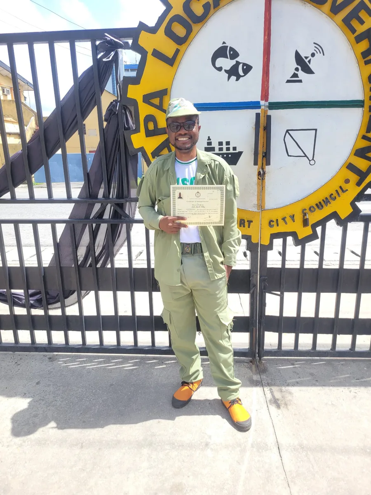
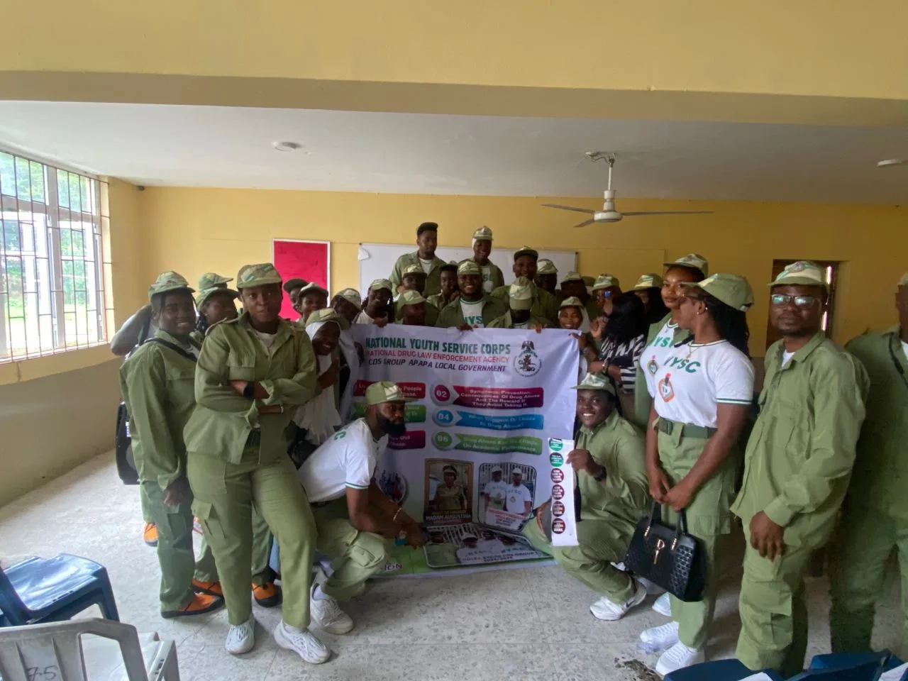

Miracle Victory AjokuChemical engineer modelling CO₂ separation, from membrane transport physics to plant-scale techno-economics.
Membrane CO₂ capture researcher
I build physics-based models of gas separation, validate them against pilot data, and use techno-economics and machine learning to test whether common design shortcuts actually hold.
When do the shortcuts used to design carbon capture systems break down, and what does it cost?
My work spans scales: from dual-mode sorption in glassy-polymer hollow fibres, to rate-based amine absorption validated against the Kaiserslautern pilot plant, to the cost of capture for natural gas, coal and cement flue gases.
I have shown that sizing membranes with pure-gas permeability data undersizes modules by up to 9.6%, and that membrane pre-concentration ahead of MEA absorption raises capture cost even with a free membrane. I combine this with machine learning and data analysis, and I make all my code and data openly available.
Selected work
All publicationsModelling CO₂ separation across scales
Membrane-based CO₂ capture is my lead interest. Around it sit amine absorption, hybrid process design, machine learning for energy systems, and environmental data science.
Papers, preprints and manuscripts
Eight works across carbon capture, membranes, energy forecasting, environmental justice and AI. My name is in bold.
Peer reviewer, Petroleum Science
China University of Petroleum, published by KeAi / Elsevier. Reviewed one manuscript in 2026.
Research, engineering and data projects
Select a project to see what I did, the methods, and links to code or apps.
Education, work and research
BEng Chemical Engineering
Federal University of Technology Owerri (FUTO), Nigeria, 2018 to 2024. PTDF and Federal Scholarship Board Merit Scholar.
Tools and methods
Each skill is tied to work where I used it.
Community, leadership and recognition



Honours and awards
Let’s talk about research
I welcome conversations about graduate research in membrane-based CO₂ capture and process systems engineering, collaborations, and engineering roles.
Based in Lagos, Nigeria. Open to relocation for study or work.